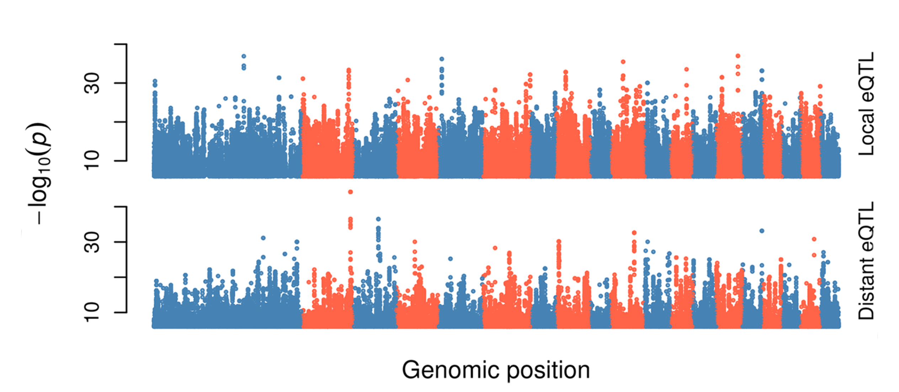
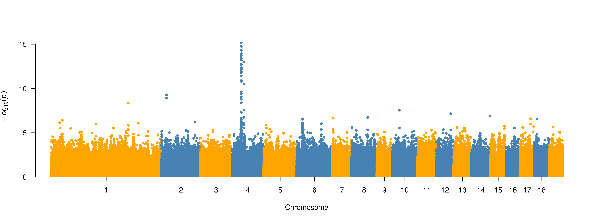
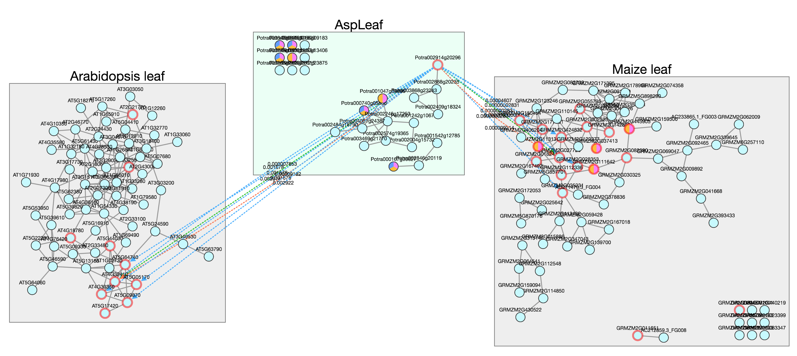
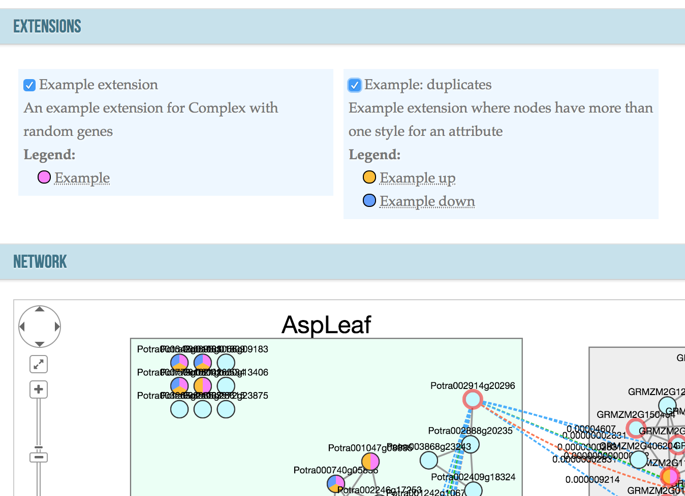

https://bit.ly/2OJ20Kq
Association studies, co-expression networks and genome assembly
Niklas Mähler 2018-11-13
Swedish Aspen Collection
12 populations
116 genotypes
Two common gardens
DNA-Seq and RNA-Seq
Association studies in
P. tremula
eQTL mapping
Mähler
et al.
2017
Association between co-expression network connectivity and selection

GWAS of biomass, leaf shape, and metabolite abundance
Ongoing projects
Gene expression > metabolites > leaf shape > biomass
Cinnaymoyl salicortin

Co-expression networks
Conservation of co-expression across species
Netotea
et al.
2014
complex.plantgenie.org
Beta version
Version 3 in the works
Ability to overlay different types of data


Norway spruce genome assembly
50x PacBio data
Filtered chloroplast and mitochondria reads
Downsample to 30x
MARVEL assembler developed by Siegfried Schloissnig
Originally for the axolotl genome (
Nowoshilow
et al.
2018
)
https://github.com/schloi/MARVEL
Current estimate for first alignment step
1.8 million CPU hours
500 TB of storage
Optimisation needed